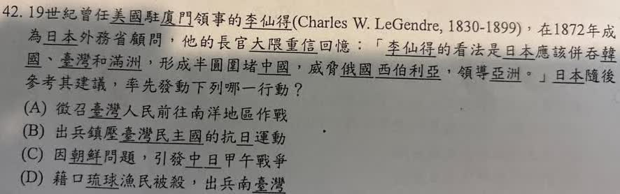

分享原卷｜第42題
完整原題
19世紀曾任美國駐廈門領事的李仙得（Charles W. LeGendre, 1830-1899），在1872年成為日本外務省顧問，他的長官大隈重信回憶：「李仙得的看法是日本應該併吞韓國、臺灣和滿洲，形成半圓圍堵中國，威脅俄國西伯利亞，領導亞洲。」日本隨後參考其建議，率先發動下列哪一行動？
(A) 徵召臺灣人民前往南洋地區作戰
(B) 出兵鎮壓臺灣民主國的抗日運動
(C) 因朝鮮問題，引發中日甲午戰爭
(D) 藉口琉球漁民被殺，出兵南臺灣
先想一想，再查看答案、解說與原圖
原卷作答：A（原卷紅筆訂正D）
正確答案：D，藉口琉球漁民被殺，出兵南臺灣。
逐項解析
| 選項與原句 | 判讀 | 句意與判斷理由 |
|---|---|---|
| (A) 徵召臺灣人民前往南洋地區作戰 | 不選 | 屬第二次世界大戰、日治後期背景，時間較晚。 |
| (B) 出兵鎮壓臺灣民主國的抗日運動 | 不選 | 對應1895年乙未戰爭，晚於牡丹社事件。 |
| (C) 因朝鮮問題，引發中日甲午戰爭 | 不選 | 甲午戰爭始於1894年，晚於1874年。 |
| (D) 藉口琉球漁民被殺，出兵南臺灣 | 應選 | 對應1874年牡丹社事件，符合李仙得受聘顧問後的直接侵臺行動。 |
詳細說明與解題步驟
【抓時間與直接後續事件】
題幹關鍵是1872年李仙得受聘為日本外務省顧問，以及對臺灣的侵略建議。日本於1874年以琉球人漂流到臺灣南部後遇害為藉口出兵南臺灣，稱為牡丹社事件，符合D。
「率先」要求比較四項的先後，不是把日本後來所有對外擴張都當成同一件事。題中引述也不代表當時已經完成併吞臺灣、韓國與滿洲。
【把四項放回時間軸】
D：1874年牡丹社事件，四項最早。
C：1894年開始的中日甲午戰爭，與朝鮮問題等背景相關，比牡丹社事件晚。
B：1895年《馬關條約》後，日本接收臺灣並鎮壓臺灣民主國等抗日力量，屬乙未戰爭時期。
A：日本徵召臺灣人民到南洋作戰，是日治後期、第二次世界大戰的背景，更晚。
因此雖然其他三項也和日本擴張有關，只有D符合題幹時序與李仙得涉及南臺灣的直接脈絡。
核對註記：已依原卷或完整文字核對並獨立解題；對應教材課次未確認，歸綜合。
原圖（僅本題）
